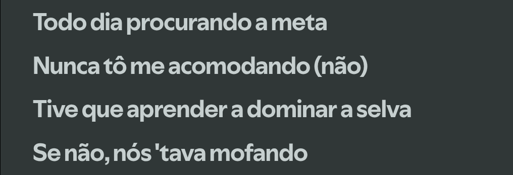
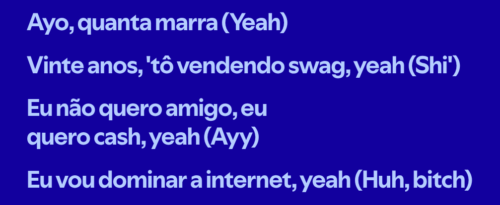
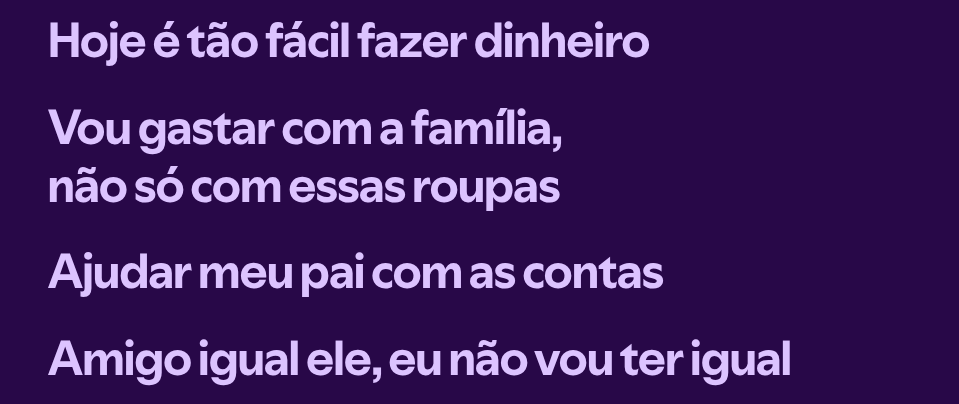
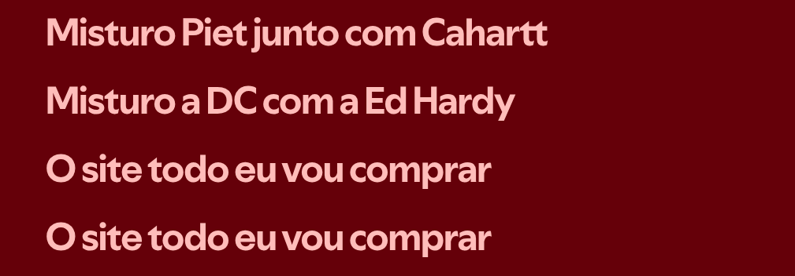

Onde a música encontra a identidade da moda
A música influencia na forma que você se veste -> A forma que você se veste influencia em como o mundo te enxerga -> A forma em que o mundo te enxerga influencia na forma em que você interpreta o mundo.
Passado de um periodo onde o US Drip e o Streetwear eram fortíssimos, hoje o Trap transiciona para peças autênticas de design próprio ou de grandes marcas de grife, puxando para o estilo High FASHION.
As principais marcas citadas pelas músicas antigamente eram Nike, New Era, Vlone... Algo mais esportivo/streetwear
Hoje, as principais marcas citadas pelas músicas são Bottega Veneta, Comme Des Garcon, Balenciaga, Vetements e Rick Owens... Detalhe: todas essas marcas participam dos desfiles da Fashion Week
Artistas de fora da bolha já fizeram sons desse gênero, por exemplo, Bruno Mars, The Weekend e Ariana Grande, na participação deles em cada som é perceptível a leveza de se aventurar em um gênero em que o público e a indústria não cobram um padrão a se seguir, muito pelo contrário, a maior cobrança no Trap é a AUTENTICIDADE sonora.
Surgiu nos anos 2000 em Atlanta, é um genero que ganhou espaço na mídia de forma extremamente rápida, justamente por vir do Rap e já contar com muitos artistas grandes desde seu princípio. Feito para priorizar mais a energia que o som passa, o Trap optou por fugir de instrumentos acústicos e conta com graves bem altos, os famosos 808's, além disso, o único e principal requisito para se ter uma lírica boa é a criatividade, isso mais as novas formas de melodias foram essenciais para atrai um público que já estava cansado de parar pra ouvir uma música e só ouvir coisas chatas do mundo, ideologias fortes, e letras que exigem interpretação de forma concentrada.
A arte influência muitas pessoas a serem melhores, e muito além de discursos, obrigações ou falas cultas, as pessoas ouvem letras se identificam e se inspiram... A influência no Trap prevalece pela lírica e pela estética.
Veja abaixo alguns versos e como é curioso a variade de humor, conteúdo e intenção ao passar uma mensagem.



